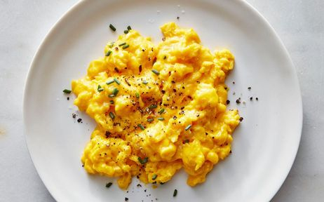

Míchaná vejíčka
Zpět

Popis jídla
Základ dobrého dne je vydatná snídaně. Tu nám v každém případě mohou zajistit míchaná vajíčka. Tento repcet je možné připravit i ve vegetariánské podobě. Jídlo, které dokáže připravit opravdu každý a to během pár minut. Udělá dobře při kocovině, ale i radost jako snídaně do postele.
Ingredience
- vajíčka
- slanina
- máslo
- cibule
- sůl
- pepř
- pažitka nebo jarní cibulka
Postup přípravy
- Rozklepneme vajíčka do misky, okořeníme a mícháme dokud se bílek a žloutek nespojí.
- Nakrájímme slaninu a cibuli na kostičky.
- Rozehřejeme pánev a přidáme máslo.
- Na pánev vhodíme na jemno nakrájenou cibuli a slaninu. Smažíme do zesklovatění cibule.
- Přilijeme rozkvrdlaná vajíčka a za stálého míchání na nízkém plameni smažíme.
- Ve chvíli, kdy se začíná měnit konzistence vajíček, tak je ztáhneme z plamene a mícháme, dokud nedosáhneme požadované konzistence.
- V případě, že vajíčka jsou moc tekutá, tak je vrátíme na střední plamen a doděláme do požadované podoby.
- Míchaná vajíčka ozdobíme pažitkou nebo jarní cibulkou a servírujeme na plochý talíř s opečeným chlebem.
- Je možné podávat s omáčkou na základě majonézy.